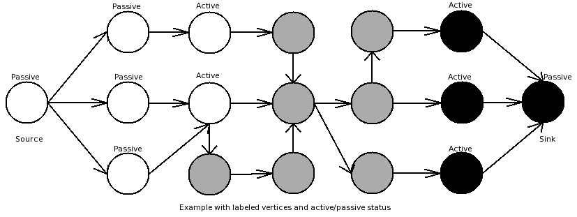

// named parameter version
template <class Graph, class P, class T, class R>
typename property_traits<typename property_map<Graph, edge_capacity_t>::const_type>::value_type
boykov_kolmogorov_max_flow(Graph& g,
typename graph_traits<Graph>::vertex_descriptor src,
typename graph_traits<Graph>::vertex_descriptor sink,
const bgl_named_params<P, T, R>& params = all defaults)
// non-named parameter version
template <class Graph, class CapacityEdgeMap, class ResidualCapacityEdgeMap, class ReverseEdgeMap,
class PredecessorMap, class ColorMap, class DistanceMap, class IndexMap>
typename property_traits<CapacityEdgeMap>::value_type
boykov_kolmogorov_max_flow(Graph& g,
CapacityEdgeMap cap,
ResidualCapacityEdgeMap res_cap,
ReverseEdgeMap rev_map,
PredecessorMap pre_map,
ColorMap color,
DistanceMap dist,
IndexMap idx,
typename graph_traits <Graph>::vertex_descriptor src,
typename graph_traits <Graph >::vertex_descriptor sink)Additional overloaded versions for non-named parameters are provided (without DistanceMap/ColorMap/DistanceMap; for those iterator_property_maps with the provided index map are used)
The boykov_kolmogorov_max_flow() function calculates the maximum flow of a network. See Section Network Flow Algorithms for a description of maximum flow. The calculated maximum flow will be the return value of the function. The function also calculates the flow values f(u,v) for all (u,v) in E, which are returned in the form of the residual capacity r(u,v) = c(u,v) - f(u,v).
Requirements:
The directed graph G=(V,E) that
represents the network must include a reverse edge for every edge in
E. That is, the input graph should be Gin =
(V,{E U ET}). The ReverseEdgeMap argument rev
must map each edge in the original graph to its reverse edge, that is
(u,v) -> (v,u) for all (u,v) in E.
Remarks: While the push-relabel method states that each edge in ET has to have capacity of 0, the reverse edges for this algorithm ARE allowed to carry capacities. If there are already reverse edges in the input Graph G, those can be used. This can halve the amount of edges and will noticeably increase the performance.
Algorithm description:
The Boykov-Kolmogorov max-flow (or often
BK max-flow) algorithm is a variety of the augmenting-path algorithm. Standard
augmenting path algorithms find shortest paths from source to sink vertex and
augment them by substracting the bottleneck capacity found on that path from the
residual capacities of each edge and adding it to the total flow. Additionally
the minimum capacity is added to the residual capacity of the reverse edges. If
no more paths in the residual-edge tree are found, the algorithm terminates.
Instead of finding a new shortest path from source to sink in the graph in each
iteration, the Boykov-Kolmogorov algorithm keeps the already found paths as
follows:
The algorithm builds up two search trees, a source-tree and a sink-tree. Each vertex has a label (stored in ColorMap) to which tree it belongs and a status-flag if this vertex is active or passive. In the beginning of the algorithm only the source and the sink are colored (source==black, sink==white) and have active status. All other vertices are colored gray. The algorithm consists of three phases:
grow-phase: In this phase active vertices are allowed to acquire neighbor vertices that are connected through an edge that has a capacity-value greater than zero. Acquiring means that those vertices become active and belong now to the search tree of the current active vertex. If there are no more valid connections to neighbor vertices, the current vertex becomes passive and the grow phase continues with the next active vertex. The grow phase terminates if there are no more active vertices left or a vertex discovers a vertex from the other search tree through an unsaturated edge. In this case a path from source to sink is found.
augment-phase: This phase augments the path that was found in the grow phase. First it finds the bottleneck capacity of the found path, and then it updates the residual-capacity of the edges from this path by substracting the bottleneck capacity from the residual capacity. Furthermore the residual capacity of the reverse edges are updated by adding the bottleneck capacity. This phase can destroy the built up search trees, as it creates at least one saturated edge. That means, that the search trees collapse to forests, because a condition for the search trees is, that each vertex in them has a valid (=non-saturated) connection to a terminal.
adoption-phase: Here the search trees are reconstructed. A simple solution would be to mark all vertices coming after the first orphan in the found path free vertices (gray). A more sophisticated solution is to give those orphans new parents: The neighbor vertices are checked if they have a valid connection to the same terminal like this vertex had (a path with unsaturated edges). If there is one, this vertex becomes the new parent of the current orphan and this forest is re-included into the search tree. If no new valid parent is found, this vertex becomes a free vertex (marked gray), and it's children become orphans. The adoption phase terminates if there are no more orphans.

Details:
Marking heuristics: A timestamp is stored for each vertex which shows in which iteration of the algorithm the distance to the corresponding terminal was calculated.
This distance is used and gets calculated in the adoption-phase. In order to find a valid new parent for an orphan, the possible parent is checked for a connection to the terminal to which tree it belongs. If there is such a connection, the path is tagged with the current time-stamp, and the distance value. If another orphan has to find a parent and it comes across a vertex with a current timestamp, this information is used.
The distance is also used in the grow-phase. If a vertex comes across another vertex of the same tree while searching for new vertices, the other's distance is compared to its distance. If it is smaller, that other vertex becomes the new parent of the current. This can decrease the length of the search paths, and so amount of adoptions.
Ordering of orphans: As described above, the augment-phase and the adoption phase can create orphans. The orphans the augment-phase generates, are ordered according to their distance to the terminals (smallest first). This combined with the distance/timestamp heuristics results in the possibility for not having to recheck terminal-connections too often. New orphans which are generated in adoption phase are processed before orphans from the main queue for the same reason.
Implementation notes:
The algorithm is mainly implemented as described by Boykov and Kolmogorov in [69]. An extended version can be found in the PhD Thesis of Kolmogorov [68]. The following changes are made to improve performance:
boost/graph/boykov_kolmogorov_max_flow.hpp
IN: Graph& g
A directed graph. The graph's type must be a model of Vertex List Graph, Edge List Graph and Incidence Graph. For each edge (u,v) in the graph, the reverse edge (v,u) must also be in the graph. Performance of the algorithm will be slightly improved if the graph type also models Adjacency Matrix.
IN: vertex_descriptor src
The source vertex for the flow network graph.
IN: vertex_descriptor sink
The sink vertex for the flow network graph.
IN: edge_capacity(EdgeCapacityMap cap)
The edge capacity property map. The type must be a model of a constant Lvalue Property Map. The key type of the map must be the graph's edge descriptor type.
Default: get(edge_capacity, g)
OUT: edge_residual_capacity(ResidualCapacityEdgeMap res)
The edge residual capacity property map. The type must be a model of a mutable Lvalue Property Map. The key type of the map must be the graph's edge descriptor type.
Default: get(edge_residual_capacity, g)
IN: edge_reverse(ReverseEdgeMap rev)
An edge property map that maps every edge (u,v) in the graph to the reverse edge (v,u). The map must be a model of constant Lvalue Property Map. The key type of the map must be the graph's edge descriptor type.
Default: get(edge_reverse, g)
UTIL: vertex_predecessor(PredecessorMap pre_map)
A vertex property map that stores the edge to the vertex' predecessor. The map must be a model of mutable Lvalue Property Map. The key type of the map must be the graph's vertex descriptor type.
Default: get(vertex_predecessor, g)
OUT/UTIL: vertex_color(ColorMap color)
A vertex property map that stores a color for edge vertex. If the color of a vertex after running the algorithm is black the vertex belongs to the source tree else it belongs to the sink-tree (used for minimum cuts). The map must be a model of mutable Lvalue Property Map. The key type of the map must be the graph's vertex descriptor type.
Default: get(vertex_color, g)
UTIL: vertex_distance(DistanceMap dist)
A vertex property map that stores the distance to the corresponding terminal. It's a utility-map for speeding up the algorithm. The map must be a model of mutable Lvalue Property Map. The key type of the map must be the graph's vertex descriptor type.
Default: get(vertex_distance, g)
IN: vertex_index(VertexIndexMap index_map)
Maps each vertex of the graph to a unique integer in the range [0, num_vertices(g)). The map must be a model of constant LvaluePropertyMap. The key type of the map must be the graph's vertex descriptor type.
Default: get(vertex_index, g)
This reads an example maximum flow problem (a graph with edge capacities) from a file in the DIMACS format (example/max_flow.dat). The source for this example can be found in example/boykov_kolmogorov-eg.cpp.
#include <boost/config.hpp>
#include <iostream>
#include <string>
#include <boost/graph/adjacency_list.hpp>
#include <boost/graph/boykov_kolmogorov_max_flow.hpp>
#include <boost/graph/read_dimacs.hpp>
#include <boost/graph/graph_utility.hpp>
int
main()
{
using namespace boost;
typedef adjacency_list_traits < vecS, vecS, directedS > Traits;
typedef adjacency_list < vecS, vecS, directedS,
property < vertex_name_t, std::string,
property < vertex_index_t, long,
property < vertex_color_t, boost::default_color_type,
property < vertex_distance_t, long,
property < vertex_predecessor_t, Traits::edge_descriptor > > > > >,
property < edge_capacity_t, long,
property < edge_residual_capacity_t, long,
property < edge_reverse_t, Traits::edge_descriptor > > > > Graph;
Graph g;
property_map < Graph, edge_capacity_t >::type
capacity = get(edge_capacity, g);
property_map < Graph, edge_residual_capacity_t >::type
residual_capacity = get(edge_residual_capacity, g);
property_map < Graph, edge_reverse_t >::type rev = get(edge_reverse, g);
Traits::vertex_descriptor s, t;
read_dimacs_max_flow(g, capacity, rev, s, t);
std::vector<default_color_type> color(num_vertices(g));
std::vector<long> distance(num_vertices(g));
long flow = boykov_kolmogorov_max_flow(g ,s, t);
std::cout << "c The total flow:" << std::endl;
std::cout << "s " << flow << std::endl << std::endl;
std::cout << "c flow values:" << std::endl;
graph_traits < Graph >::vertex_iterator u_iter, u_end;
graph_traits < Graph >::out_edge_iterator ei, e_end;
for (tie(u_iter, u_end) = vertices(g); u_iter != u_end; ++u_iter)
for (tie(ei, e_end) = out_edges(*u_iter, g); ei != e_end; ++ei)
if (capacity[*ei] > 0)
std::cout << "f " << *u_iter << " " << target(*ei, g) << " "
<< (capacity[*ei] - residual_capacity[*ei]) << std::endl;
return EXIT_SUCCESS;
}The output is:
c The total flow: s 13 c flow values: f 0 6 3 f 0 1 0 f 0 2 10 f 1 5 1 f 1 0 0 f 1 3 0 f 2 4 4 f 2 3 6 f 2 0 0 f 3 7 5 f 3 2 0 f 3 1 1 f 4 5 4 f 4 6 0 f 5 4 0 f 5 7 5 f 6 7 3 f 6 4 0 f 7 6 0 f 7 5 0
edmonds_karp_max_flow(), push_relabel_max_flow().
|
Copyright © 2006 |
Stephan Diederich, University Mannheim(diederich@ti.uni-manheim.de) |